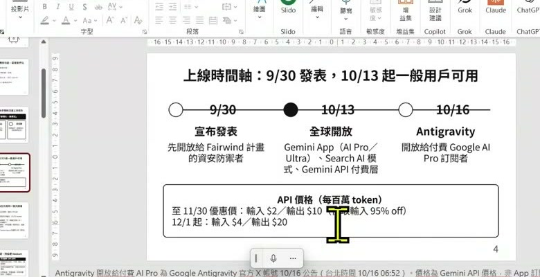

0. 課程資訊與教材
| 課程名稱 | EP56｜初見 Gemini 4 Argon 模型 |
|---|---|
| 直播日期 | 2026/10/16（五）22:30，錄影全長 32 分 25 秒 |
| 主持 | 黃政勛 |
| 本堂主題 | 長任務模型定位、1M token、Low／Medium／High 思考程度、學習入口、筆記本、自訂技能、連接器、任務模式與 3D 示範 |
| 課程定位 | 快速導覽新模型與新介面，重點放在「什麼值得用、哪裡會失手、怎麼把人工接手點留在流程裡」 |
📁 課程資料夾與教材
🔗 開啟「EP56｜初見 Gemini 4 Argon 模型」來源資料夾 ›
| 教材 | 整理時的用途 |
|---|---|
EP56 課堂錄影 | 以現場口述與操作為主，保留實際成功、等待、錯誤、用量耗盡與老師當場修正判斷的過程。 |
25 頁課程簡報 | 核對 Argon 定位、任務模式、筆記本、技能、連接器、提示詞與安全提醒；簡報中的規格與數字屬課程當時資料。 |
提示詞表與實作手冊 | 補足 3D 示意圖、單檔 HTML、研究簡報與長任務交辦的可直接複製範例。 |
📥 帶走完整筆記包
課堂筆記 PDF · 課堂筆記 Word · 簡報整合 PDF · 簡報整合 Word · 每 15 秒完整版 PDF · ZIP 筆記包
1. 一張圖看懂這堂
這堂不是把功能列成清單，而是回答：一個長任務模型，怎麼從目標一路走到可以驗收的成果？
2. Argon 的定位不是更會聊天，而是願意在一件事上多走幾步
老師先把「模型比較」從單次回答拉回工作完成度：長推理、長輸出與長任務是三個不同能力。
| 定位 | 課堂怎麼解釋 | 真正要驗收什麼 |
|---|---|---|
| 長推理 | 思考程度可調，遇到複雜推理或除錯時願意花更多步驟。 | 推理鏈是否回到來源、限制與可重現的結果。 |
| 長輸出 | 可一次處理多檔程式、測試或長篇內容。 | 檔案是否齊全、格式可用、不是只交一段說明。 |
| 長任務 | 能規劃、呼叫工具、反覆測試，再修到目標成立。 | 中途錯誤是否被發現、修正，最終成果是否通過驗收。 |

3. 1M token 是共用額度；思考程度也不是越高越好
大上下文讓資料與輸出空間變大，但輸入、思考與輸出仍在同一個額度裡競爭；任務越大，越需要先切範圍。
| 選擇 | 適合情境 | 不要拿來做什麼 |
|---|---|---|
| Low | 即時整理、簡單轉換、需要低延遲的任務。 | 不要因為快，就省略來源與格式限制。 |
| Medium | 一般專業工作、內容製作、常見程式與 3D 原型。 | 不要預設所有工作都必須升到 High。 |
| High | 複雜研究、困難推理、多輪除錯與高風險比較。 | 不要用高思考掩蓋目標不清或驗收缺失。 |

4. 學習入口的價值，是把筆記、探索、測驗與引導收進同一條路
直播展示側邊欄的學生／學習入口：課程大綱、筆記本、沉浸式探索、小測驗與學習卡，不必再從不同產品各找一次。

| 功能 | 適合做什麼 | 使用前先問 |
|---|---|---|
| 筆記本 | 集中課程檔案、網站與雲端資料，讓回答盡量依來源進行。 | 來源是否真的完整？哪些內容不能離開原資料夾？ |
| 沉浸式探索 | 把抽象主題變成可點擊、可觀看的學習場景。 | 互動是否幫助理解，還是只增加視覺刺激？ |
| 小測驗／引導學習 | 把內容改成練習、提示與逐步理解。 | 題目是否真的依教材，而不是模型自行補題？ |
| 學習卡 | 快速複習術語、步驟與概念對照。 | 卡片有沒有把例外與限制刪掉？ |
5. 技能與連接器讓流程可以重複，也讓權限問題變得更具體
自訂區不只存一段提示詞；它開始承接寫作風格、專注工作、會議準備、Workspace、NotebookLM 與外部 MCP。
| 元件 | 它回答的問題 | 治理重點 |
|---|---|---|
| 技能 | 這件事要用什麼固定步驟、背景與完成標準？ | 流程要可重複，不能只記住一次成功的提示詞。 |
| 連接器／MCP | 任務需要讀哪個外部服務、能不能寫回去？ | 只開必要權限；讀取、寫入與對外傳送要分開。 |
| 筆記本 | 這次回答應依哪些來源，不應依哪些來源？ | 資料範圍與引用要能回查。 |
| 任務 | 何時執行、執行到哪裡、什麼時候需要人？ | 登入、付款、刪除與發布設人工接手點。 |
6. 3D Demo 很吸睛，查核才決定它能不能拿去教學
現場以 2026 Tesla Roadster 飛天車影片為材料，讓模型拆動作、做 3D 互動頁，再發布到 Google Sites。這段同時示範能力，也示範錯誤。

簡報提供的兩種 3D 提示詞骨架
| 看起來做到了 | 交付前仍要驗 |
|---|---|
| 3D 物件能旋轉、縮放與自動播放 | 手機操作、載入速度、重置、無障礙與瀏覽器相容性。 |
| 影片被拆成多個飛行節點 | 節點順序是否忠於來源影片，是否漏掉重要動作。 |
| 畫面有速度、推力與階段說明 | 哪些是真實來源、哪些是模型補出的示意數字。 |
| 一鍵發布到網站 | 素材授權、公開範圍、個資與撤下機制。 |
7. 任務模式的核心不是無人值守，而是可追蹤、可停下、可接手
課堂把任務模式與過去的 Spark 串在一起：本機瀏覽器、遠端瀏覽器與遠端程式碼執行能接續工作，但權限與容量都不是無限。
- 先寫成果：具體說明要交什麼檔案、何時交、哪些來源可用。
- 先看計畫：要求模型列步驟、風險、需要釐清的問題與驗收方式。
- 再放工具：只開本次需要的瀏覽器、程式碼與連接器權限。
- 保留接手：遇到登入、付款、傳送、刪除或公開發布時停止。
- 交付前查核：看檔案、測試、來源、錯誤日誌與未完成事項。
| 情境 | AI 可以繼續 | 人要接手 |
|---|---|---|
| 研究與整理 | 搜尋、分類、建立來源清單與草稿。 | 確認來源範圍、付費資料與結論採用。 |
| 瀏覽器操作 | 填寫一般欄位、下載公開資料、整理頁面。 | 登入、驗證碼、付款、個資與對外送出。 |
| 程式與檔案 | 產生、測試、修正與匯出檔案。 | 不可逆刪除、正式部署與權限變更。 |
8. 教學與研究真正可用的地方，是把多個步驟接成一條可查核的工作流
課堂後段不再只看 3D，而是把應用拉到影片理解、程式、數學推演、文獻收集與 NotebookLM 整理。
| 工作情境 | 可以交給模型的段落 | 人要保留的判斷 |
|---|---|---|
| 教學 Demo | 把工程圖、統計推導或物理過程做成逐步動畫。 | 公式、數據與因果是否正確，互動是否真的幫助理解。 |
| 影片理解 | 描述畫面、拆節點、整理事件順序與建立示意頁。 | 真實互動與物理細節是否被模型誤判。 |
| 文獻收集 | 搜尋、下載、放入雲端與 NotebookLM，再整理報告。 | 資料庫登入、授權範圍、文獻完整性與引用是否正確。 |
| 程式開發 | 建立單檔原型、多檔程式、測試與錯誤修正。 | 安全、相容性、正式部署與真實使用者驗收。 |
9. 這堂課真正在教的事
一、模型能力要用完整工作流衡量
單次回答、榜單分數與漂亮 Demo 都只是片段。真正的問題是：它能否理解範圍、完成檔案、發現錯誤、重跑失敗步驟，最後留下可以驗收的成果。
二、大上下文不等於不用整理
輸入、思考與輸出共用額度；資料越多，越要先切來源、優先順序與完成定義，否則只是把混亂放進更大的窗口。
三、技能是可重複方法，不是提示詞收藏
技能應保存背景、步驟、權限與驗收；連接器只負責把工具接進來，不能取代治理。
四、視覺吸睛與事實可信要分開
3D、動畫與單檔 HTML 很適合教學原型，但模擬數據、物理細節與素材授權必須另外標示與驗證。
五、越能代做，越要先設人工接手點
登入、付款、刪除、公開發布與重要結論不應在任務尾端才想起來；它們要在交辦時就寫成停止條件。
10. 老師金句
11. 資料來源與整理說明
| 來源 | 2026/10/16 課堂錄影一段，全長 32 分 25 秒；25 頁課程簡報、提示詞表與實作手冊。 |
|---|---|
| 整理方式 | 全程本機處理：44 張關鍵畫面、305 段逐字稿，再用簡報核對術語、章節與操作順序；正式頁不是把逐字稿縮短，而是依主線重寫成章節、表格、步驟與金句。 |
| 時間戳 | 章節、截圖與引文後方的［mm:ss］對應課堂錄影播放器時間。 |
| 整理 | 竹貞（TAR 的逐幀筆記專員）；知臨負責正式頁重建、硬閘門、發布與回讀驗證。 |
已知限制，請先看過再引用
- 逐字稿由機器產生，工具名、英文名與口語重複可能辨識錯誤；本頁只修正可由簡報與畫面確認的部分。
- 課程中的模型名稱、權限、價格、額度與介面屬 2026/10/16 當時內容；正式採用前應再核對當下官方說明。
- 課堂引用的榜單、規格與上線時間由簡報彙整；本頁定位是忠實課堂筆記，不把它們改寫成獨立查核報告。
- 公開截圖已移除或避開帳號、網址、書籤、與會者與工作專案；原始錄影與原始簡報不在公開頁提供。
- 3D 頁面中的速度、推力與其他物理數據為模型示意，不能當作 Tesla Roadster 真實規格。
- 引用到教學、報告、程式或公開文章前，請回看錄影原始段落並核對最新官方文件。